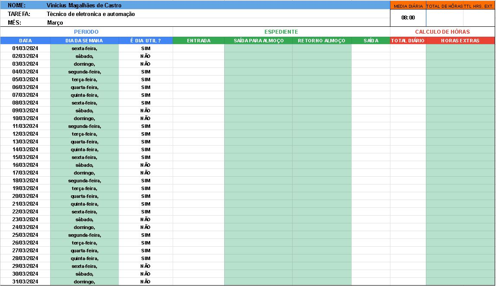

Este trabalho foi desenvolvido com o intuito de demonstrar conhecimento prático na criação de folhas de cálculos através do Excel.
E para este exercício eu escolhi criar uma folha de ponto, onde se estabelece que:
Um funcionário de uma determinada empresa regista os seus horários de entrada, saída e pausa de almoço durante o seu expediente mensal.
Este funcionário trabalha num regime de 8hrs diárias e todas as horas excedentes a esta media são consideras como horas extra,
Também são consideradas horas extra todas as horas trabalhadas em dias não úteis como sábados, domingos, e feriados.
Através dos registos de expediente esta folha de pontos tem como função:
- Calcular o número total de horas diárias trabalhadas;
- Reconhecer se houve horas extras e determinar quantas;
- Calcular o número total de horas mensais trabalhadas;
- Calcular o número total de horas extras trabalhadas no período mensal;
Criando a folha de pontos:
No display da folha foram criadas algumas colunas para o tratamento de datas, e a disposição delas é:
- uma seção de Períodos contendo as colunas: Data, Dia da semana e uma para estabelecer se são dias úteis ou não;
- uma seção de Expediente contendo as colunas: Entrada, saída para almoço, retorno do almoço e saída;
- uma seção de Cálculos de horas contendo as colunas: Total diário, Horas extras, Total mensal e Total de horas extras;
- já no topo da folha tem uma seção contendo algumas informações do funcionário como: Nome, Função e o Mês;
Fórmulas
Para se obter as informações dos cálculos desejados, foram necessárias algumas formatações das disposições numéricas
pois tencionamos trabalhar com o formato de horas, assim como também foram aplicadas algumas fórmulas matemáticas e lógicas
para que o processo fosse automatizado, sendo elas:
- Cálculo do número total de horas diárias: =(E?-D?)+(G?-F?)
Ou seja: (hora de Saída para almoço - hora de Entrada) + (hora de Saída - hora de Retorno do almoço) = Total de horas diárias. - Lógica para reconhecer se houve horas extras e determinar quantas: =SE(C?="NÃO";H?;H?-(8/24))
Ou seja: Se ("NÃO" for um dia útil; número de horas extras será igual ao número total de horas diárias;
se for um dia útil então o número de horas extras será = Total diário - 8 horas da jornada diária. - Cálculo do número total de horas mensais trabalhadas: =SOMA(H6:H36)
Ou seja: o total de horas mensais = a soma de todos os elementos dentro da coluna (Total de horas diárias). - Cálculo do número total de horas extras trabalhadas no período mensal: =SOMA(I6:J36)
Ou seja: o total de horas extras mensais = a soma de todos os elementos dentro da coluna (Horas extras).